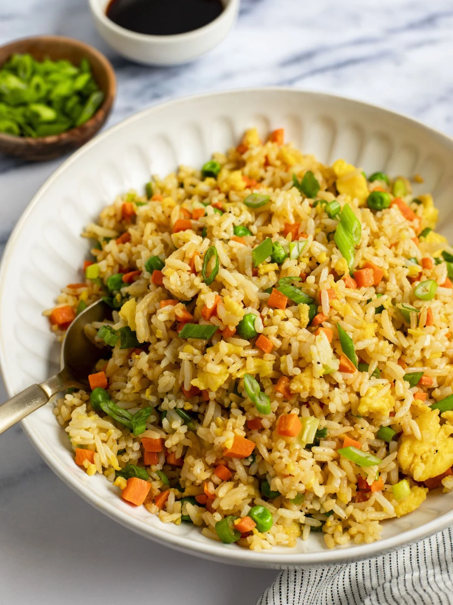

fried rice
served with peppered chicken.
Ingredients
- 3 cups cooked rice
- 1 cup diced carrots
- ½ cup green peas
- ½ cup sweet corn
- ½ cup diced liver or chicken
- 1 onion (chopped)
- Vegetable oil, curry, salt, and seasoning cubes
Recipe
- Heat oil in a pan and fry onions and vegetables for 3 minutes.
- Add cooked rice and stir to mix evenly.
- Season with curry, salt, and seasoning cubes.
- Stir-fry for 5–7 minutes until rice is hot and colorful.

Grilled Fish
Perfectly seasoned fish grilled to smoky perfection.
Ingredients
- 2 medium-sized fish (tilapia or mackerel)
- 2 tablespoons vegetable oil
- 1 tablespoon pepper blend
- 1 teaspoon garlic and ginger paste
- Salt and seasoning to taste
- Lemon juice (optional)
Recipe
- Clean and score the fish on both sides.
- Mix spices, oil, and pepper to make a marinade.
- Rub the marinade all over the fish and let it rest for 30 minutes.
- Grill in the oven or on charcoal for 20–25 minutes, turning once.
- Serve hot with sauce or rice.

jollof
served with plantain and chicken
Ingredients
- 3 cups long-grain rice
- 4 large tomatoes (blended)
- 2 red bell peppers
- 1 onion (chopped)
- 2 cloves garlic
- Vegetable oil
- Seasoning cubes, salt, and curry powder
Recipe
- Blend tomatoes, peppers, and onions together.
- Fry the mixture in oil until the water reduces.
- Add seasoning and spices to taste.
- Add washed rice and stir well.
- Pour in water, cover, and cook on low heat until done.